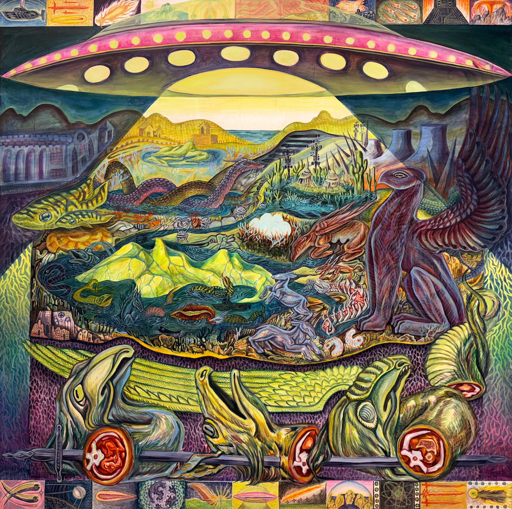
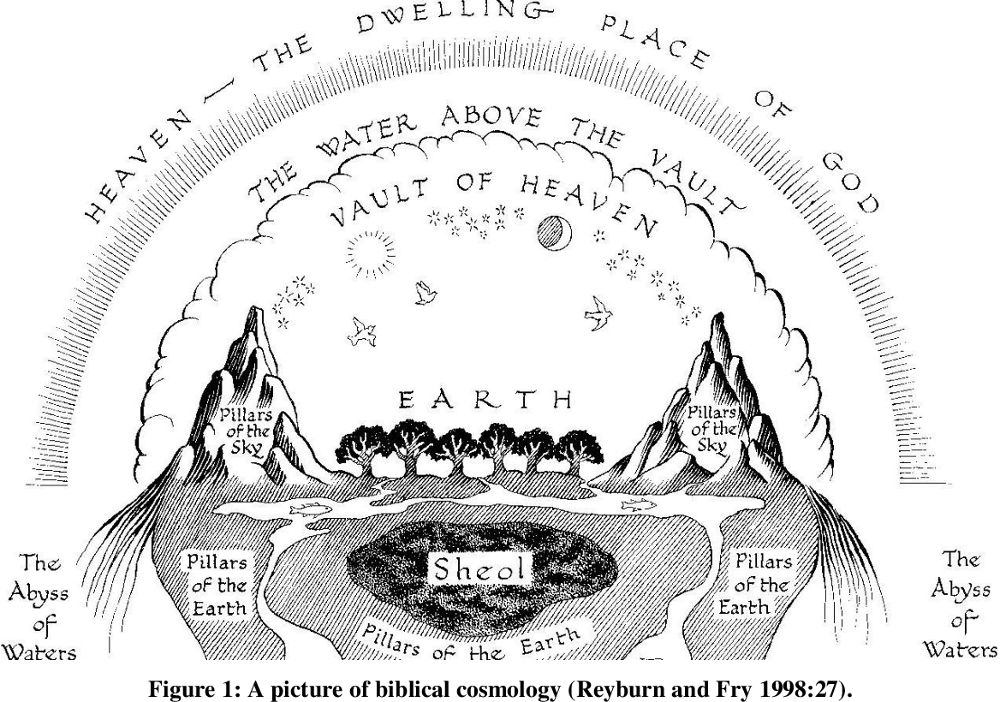
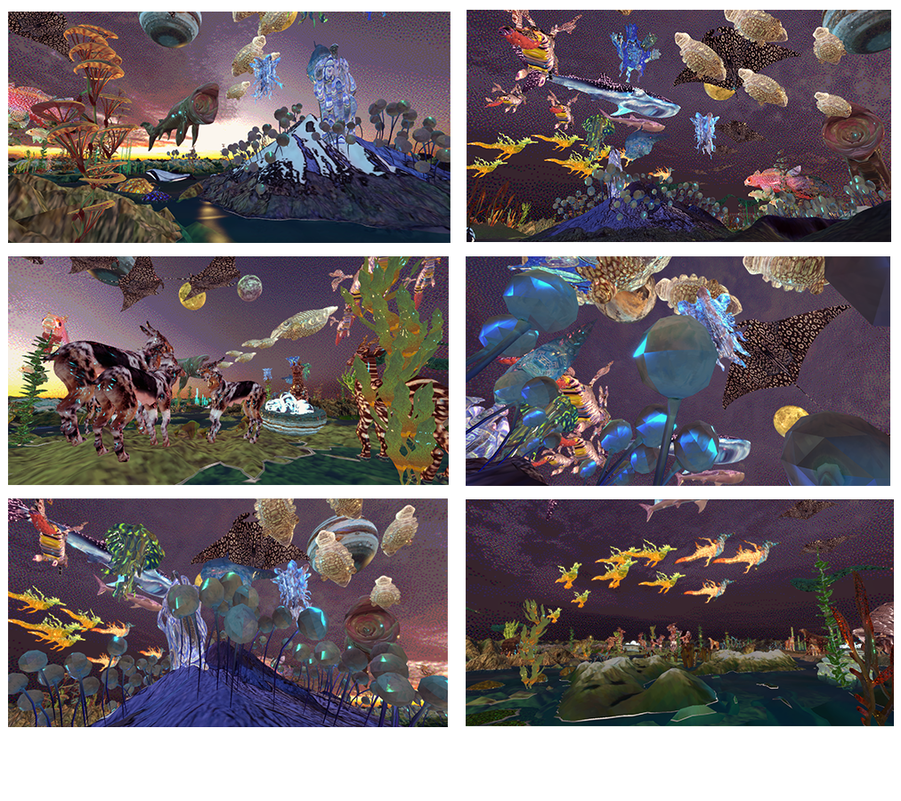

senior degree project
In my paintings, 3D rendered spaces, and code, I create scenes that host intricate systems of organism-environment exchange. I propose that these fantasy worlds, which, as simulations, draw from and reflect our own world, are intertwined at levels beyond the limits of visual observation. My virtual and physical worlds map the connections between theories, mythologies, and concepts considered to be physically and temporally distant. The human mind has always tended towards short-circuitry, inevitably drawing links between these distant ideas through mythology and conspiracy in order to understand the unexplainable. I want my works to function in the same way as the mind: a loose network of associations that, through the collapsing of a sphere into a circle, allows the real and fantastic to exist on the same plane, in the same landscape.
I focus on system dissolution and visualize the recrystallization of a new system, using data-based projections and scientific theories to inform the speculative ecological spaces I create. The environments exist in a post-anthropocene timeline, where outdated human technologies– satellites, power plants, churches- are diminished to archaic fossils, becoming useless in a post-human world.
In recollection through memory, truth is refracted repeatedly and distorted further through each recollection. Memories are fictional reconstructions that inform our behavior in the present and our imaginings of the future. In a piece called the ‘Speculative-Time Complex’, author Suhail Malik remarks "The Speculative isn't just how the future makes the present. It's also that the present itself is a speculative relationship to a past that we have already exceeded” (Avanessian). Our imaginings of the future are based in warped recollections of the past. My works constellate collective human memories of the past, particularly ecologically-based folklore, and input the environment with a map of these stories. This mapping leans into the fact that preserving memories through archival in itself is an act of creation, as stories have an entirely new meaning in the present, when separated from their context in the past.

particles under observation
In this painting, Particles Under Observation, I placed medieval marine maps, space-age technologies, comets from the Augsburg book of miracles, and slain dragons in the same flattened space under the god-like observer: the UFO.
Both alien-based conspiracies and historic comet-based apocalyptic fears are frameworks for understanding threatening phenomena - celestial events in the past and the looming fear of nuclear weaponry. This flattened space emulates the structure of a map where every landmark and organism is visible at once, without navigational guidance. Your outward perspective– the self– orients your place in this world. Artifacts and stories of the past are superimposed and interlinked to create an emergent, intricate, textured surface that isn’t temporally bound.
The balance of a networked system– an ecological cycle, the brain, a computer– relies on interactions between innumerable nodes in which the singularity of the individual becomes obsolete, dissolved into the exchanges of the whole. The equilibrium of a system at large depends on imbalances at a smaller scale. In ecological systems, the reliance of every organism on one another through symbiosis demonstrates that a connected ecology outperforms solitary entities; Or rather, it shows there is no such thing as a solitary entity. In this knotted world of vibrant matter, to harm one section of the web very well may be to harm oneself (Bennett). In our destruction, we too will be destroyed (2 Peter 2:12).
Following a mass extinction, there is a period of rapid diversification of species because openness caused by the ending of a previous ecology allows for a new one to be established. When the Earth was covered in a shallow primal sea of microbes and simple organisms, the Cambrian explosion gave way to an ocean of kaleidoscopic organisms (Briggs). After an everest-sized asteroid hit Earth, causing the extinction of the dinosaurs, mammals diversified, filling the barren landscape. Extinction is necessary for the next ecology to become. A system cannot change from within, it can only mutate into different versions of itself, and it must be destroyed for a new one to emerge.
The latin phrase Creato ex nihilo, creation out of nothing, represents the Christian idea that God created the Universe from empty space, reflecting the ecological concept that barrenness brings life. Creation mythologies, found in nearly every culture throughout human history, expose our intrinsic curiosity towards the origin of life on Earth. Similarly, scientific theories of the origin of Life– primordial soup, deep sea vents, mitochondrial symbiosis– all attempt to uncover the beginning. A theory is unprovable, so these ideas lie partially in data, partially in speculation. The faux boundary between the imagination of myth and absoluteness of science is blurred.
3D animations
In my creation myth 3D animation titled All the World an Island, I drew from research on exoplanets, paleontology, and creation in Genesis to fabricate a world where many geological timelines exist together in the same virtualized ecosystem.

world described in genesis
still of the architecture in All the World an Island
Geomythology is the study of oral and written traditions explaining geological events, revealing pre-scientific human intuition surrounding natural phenomena (Burberry). In researching and building this world, I focused on the theory that fossils inspired creature-based mythologies; The gryphon, dragons, and serpents are all thought to be based on the fossilized remains of extinct organisms found by humans in the past. By 3D sculpting these creatures and their extinct counterparts and populating them in the same environment, their division dissolves.
animation still of organisms of the island
animation still of Sheol
The viewer is brought underwater, to a cavern of hydrothermal vents where Sheol, the biblical lodge of the dead, exists in the Genesis world architecture. A leading theory of the origin of life on Earth lies in deep sea Hydrothermal vents, whose unique chemical and environmental conditions may have allowed the spontaneous formation of organic molecules and emergence of life (Magdalena).

water with neither bottom nor resting place
A reversible painting of the architecture of the world as described in Genesis, drawing from the alchemical phrase “That which is above is like that which is below, and that which is below is like that which is above, to accomplish the wonders of a single reality” (Litwa).
My paintings, in comparison to my virtual 3D environments, are stagnant visualizations that provide limited agency and mobility for the viewer. The permanence and stillness of paintings give them the ability to serve as maps, diagrams, explaining the fluid and expanding virtual worlds.
the virtual & gameplay
Hypermedia and hypertext theory is an inspirational basis for both my digital works and paintings. In hypermedia, all information is organized in a series of nodes and links, with each node attainable by any other. Rather than following a predetermined linear narrative, the self (any viewer) orients themself in the network, choosing their own center. All texts are coresident— virtually present and available for immediate access. The original text is merely the text accessed at the moment, the current center of focus (Heim). With all information accessible in an instant, at the click of a link, constraints of time and physical distance lose their grasp.
1. Technology is the interface through which we react with the material world
2. The present moment reflects the technology through which we access it (Otsuka)
Like the hyperspace of a wormhole, hypertext disrupts the logical linear tracking of the mind in favor of loose associations in an ever-expanding web. The ecologies, creatures, and logic in my work function as hypermedia- surfaces and environments of superimposed stories and creatures. My environments bring these distant nodes into a close exchange.
Another segment of my degree project is an extended reality world populated with terrestrial and aquatic creatures adapted to the environments of five imagined islands. [Play Here] Derived from the concept of Evogeneao, the evolutionary Tree of Life on a geologic time scale, these islands and their organism inhabitants represent possible branching futures of a post-Anthropocentric world following mass extinction.
Derived from the concept of Evogeneao, the evolutionary Tree of Life on a geologic time scale, these islands and their organism inhabitants represent possible branching futures of a post-Anthropocentric world following a mass extinction.

Evogeneao map, Leonard Eisenberg, 2017
By using scientific research on evolutionary phenomena unique to island ecosystems, I've sculpted informed yet imagined creatures. I used GIS data of landscapes on Earth— Akaroa Island, Mauritius, the Aleutian Islands, and Isla Teresa Glacier— as the 3D base for the five islands, bringing real-world satellite data into this mythologized world. Evogeneao is devoted to the power of an ecosystem carved by time and the miraculous emergence of life under harsh conditions.

Evogeneao map, Leonard Eisenberg, 2017
screencaps from Evogeneao
Just as fantasy is grounded in true events and mythology is based in observation, the virtual reflects the real through simulation. In his thesis ‘BEING, SPACE, AND TIME ON THE WEB’, Michael Vafopoulos writes "The virtual is not at all the opposite of the real. It is, on the contrary, a powerful and productive mode of Being, a mode that gives free rein to creative processes”. This dichotomy enforced on virtuality has led to the belief that virtualization equals escapism. In truth, the virtual is a diagram of history, a mapping of experience, a translation of the world that allows our minds to come to a deeper understanding of our environment.